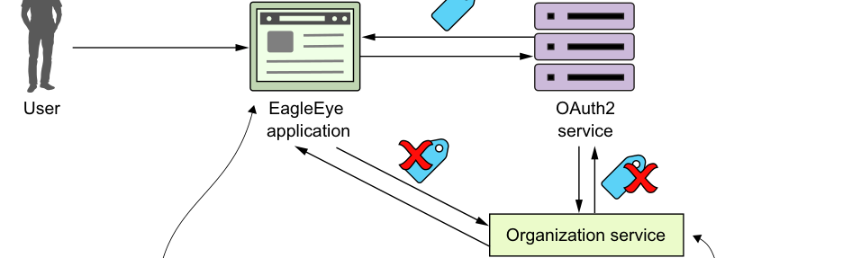

Người dùng đã đăng nhập vào ứng dụng khi token truy cập của họ hết hạn.
Ứng dụng gọi OAuth2 với refresh token và nhận token truy cập mới.

Ứng dụng gắn token đã hết hạn vào lời gọi dịch vụ tiếp theo (tới organization service).
Organization service gọi OAuth2, nhận phản hồi rằng token không còn hợp lệ, rồi truyền phản hồi trở lại ứng dụng.
Luồng refresh token cho phép ứng dụng lấy token truy cập mới mà không buộc người dùng xác thực lại.
cho biết token không còn hợp lệ. Organization service sẽ trả mã trạng thái HTTP 401 trở lại dịch vụ gọi.
- Ứng dụng EagleEye nhận mã trạng thái HTTP 401 và payload JSON cho biết lý do lời gọi thất bại từ organization service. Ứng dụng EagleEye sau đó sẽ gọi dịch vụ xác thực OAuth2 với refresh token. Dịch vụ xác thực OAuth2 sẽ xác thực refresh token rồi gửi trở lại token truy cập mới.